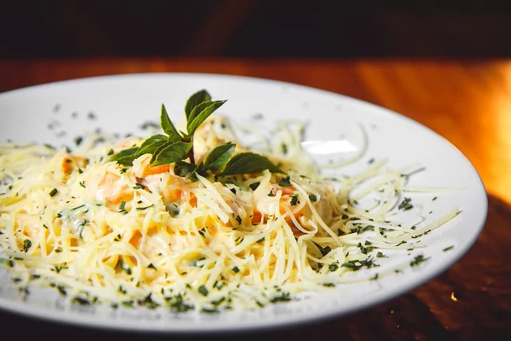

FOTOS

Cartas

Eventos

Catering

Asesoria

Distribución

Soy Javier, apasionado de la cocina basada en el producto.Mi obsesión por conocer sabores con personalidad propia me ha llevado a viajar por diferentes rincones del mundo. Estoy a vuestra entera disposición para ayudaros en vuestros negocios,darle un nuevo enfoque o renovación de vuestras cartas.
Estudié en la escuela de Luis Irizar en San Sebastián (Donostia), trabajé en el Kursal de Martín Berasategui durante dos años siendo Jefe de Partida. Llegué a Madrid a estudiar al Hotel Escuela para completar más mi formación. He sido durante 15 años Chef Exjecutive del hotel Only You Atocha. Ahora colaboro con una empresa de distribución que se llama Sabor Peninsular y tengo mi propia empresa de consultoría,su nombre es Fondo Gastroconsulting.
A nivel culinario, me gusta probar toda la cocina internacional y hacer una asociación con productos y platos nacionales, aunque mi base fundamental se centre en la cocina mediterránea más representativa. A partir de un color o un sabor, me apasiona ofrecer una textura nueva, un sabor distinto, platos que sorprendan y emocionen a mis comensales, siempre siendo fiel a la naturalidad del producto con el que trabajo.
Trabajé durante 4 meses en un hotel en la Riviera Maya, México. Allí desarrollé mi pasión por la comida mexicana y la cultura.
Poder estar en un primer plano en la creación de proyectos desde muy temprana edad ha hecho que aprenda a evolucionar un conocimiento crítico en el desarrollo de nuevos conceptos, conociendo el procedimiento y disponiendo de los recursos para obtener resultados de alta calidad. Desde siempre he tenido claro que un proyecto se debe basar en números y rentabilidad, siendo esta área una de nuestras mayores especialidades.
Con la asesoría gastronómica os ayudo a dar respuesta a todos los profesionales y empresarios que quieren montar o ya tienen un negocio de hostelería o quieren mejorar la gestión, concepto u oferta, la organización y eficiencia de su negocio.
Montamos tu negocio desde cero, creamos y diseñamos nuevos modelos de negocio, proyectos únicos y personalizados. Te acompaño en todo el camino, desde la creación de la idea, desarrollo del diseño del local, selección y formación del personal, diseño de la carta para el restaurante, selección de materias primas y proveedores, estrategia comercial y puesta en marcha del restaurante.
¡Mensaje Enviado!